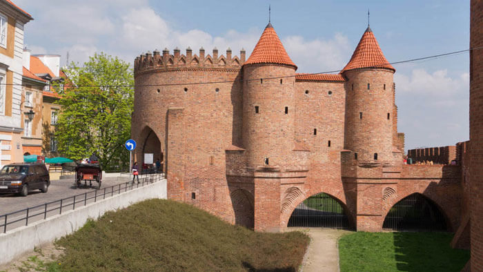
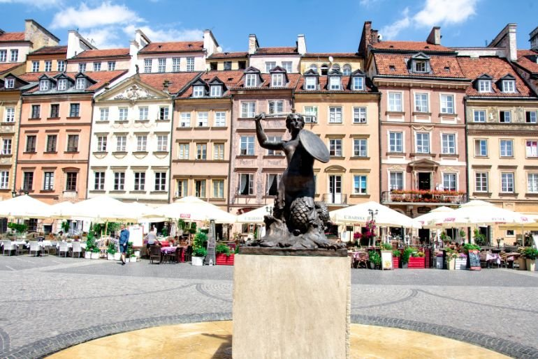
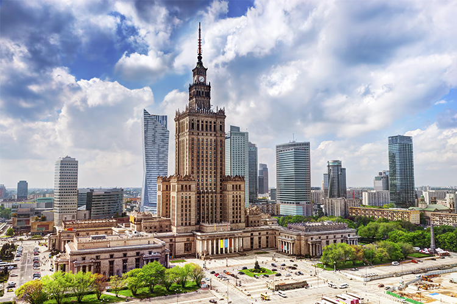
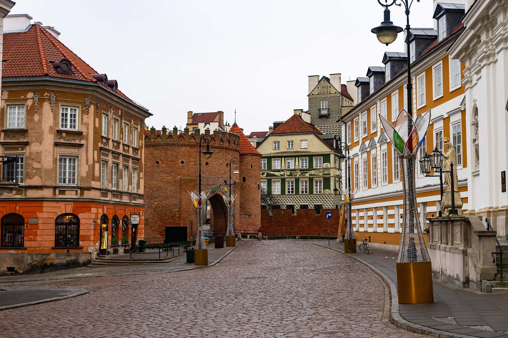
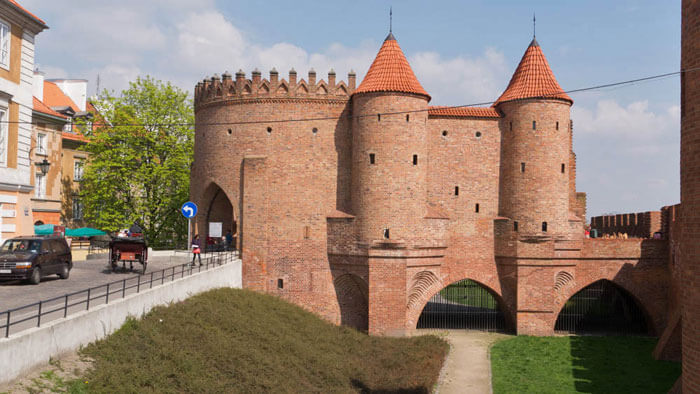
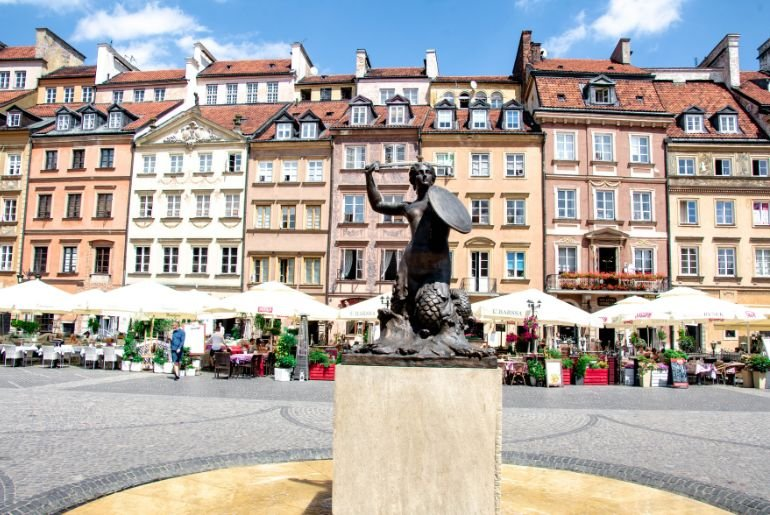
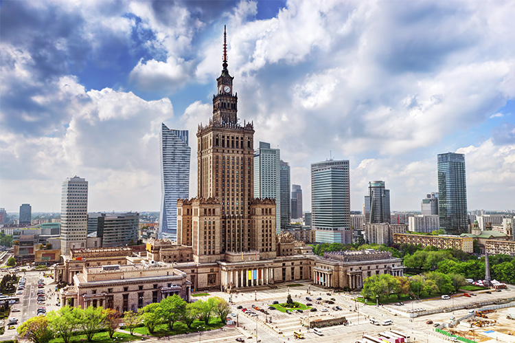
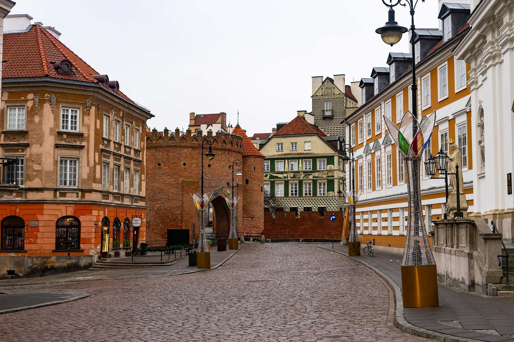

Castillo Real
Residencia de los reyes polacos y el lugar donde se firmó la primera constitución de Europa en 1791.
📍 Plaza ZamkowyCAPITAL DE POLONIA

 







Residencia de los reyes polacos y el lugar donde se firmó la primera constitución de Europa en 1791.
📍 Plaza ZamkowyEl edificio más divisible de la ciudad, fue un "regalo" de la Unión Soviética a Polonia en los años 50.
📍 Plaza DefiladMuseo donde se muestra cuando la resistencia polaca intentó liberar a la ciudad de la ocupación alemana.
📍 WolaEl parque más famoso de la ciudad.
📍 Distrito Sur
La flor cadáver... La flor cadáver es una planta que florece en el verano y se caracteriza por su aroma desagradable, que simula el olor de una carne podrida. Esta planta atrae a insectos polinizadores que se alimentan de ella.
Leer másUn hombre logra escalar un edificio más rápido que un ascensor... Un campeón mundial de escalada ha tardado 12,12 segundos en ascender los 23 metros de un edificio de Varsovia. Un trayecto en el que ha competido contra un ascensor y en el que el deportista polaco ha sido más rápido que la máquina.
Leer más
Pitón de 6 metros... Los expertos creen, según los restos que ha dejado el animal al mudar la piel, que podría medir más de seis metros. La buscan en una zona cercana a un río porque el lugar cumple las condiciones que esta especie necesita: un lugar húmedo, pacífico y silencioso.
Leer másTrump se pregunta en Varsovia si... El presidente de EEUU, Donald Trump, cree que la "cuestión fundamental de nuestro tiempo es si Occidente tiene la voluntad de sobrevivir" frente a las "amenazas" de "dentro y fuera" contra sus "valores, cultura, fe y tradición".
Leer más
Polonia asegura haber interceptado un dron sobre edificios gubernamentales en Varsovia... El Servicio de Protección del Estado de Polonia ha neutralizado un dron que sobrevolaba las inmediaciones de instalaciones sensibles del Gobierno en la calle Parkowa y el propio palacio presidencial Belweder.
Leer más